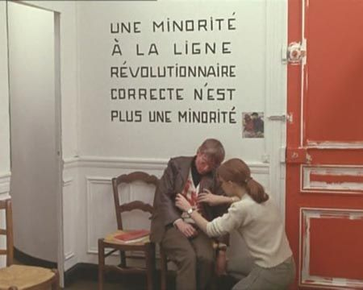
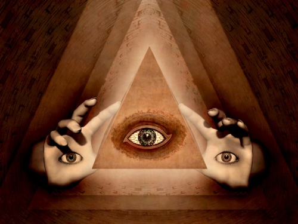
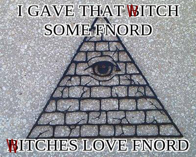
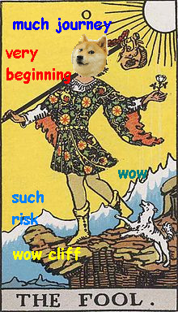
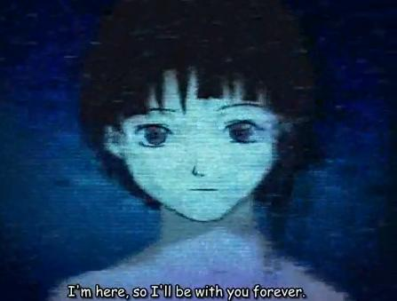

|
Initiation: The production of the impossible Thing
Author : yemeth |
v1.1
Introduction
This article deals with a process usually known as “Initiation” in the western esoteric tradition. Here, mechanisms are explained through which its doors might be opened, and also it is described what you may find there. My point of view is obviously limited. It might be too daring to assert that there is an “initiatory path”. Given the nature of that which I’m writing about in this text, we should then reformulate the term...
In a few words, if saying that "there is a way" makes any sense at all, even if this is forcibly limited by my perspective as an author,... then we might better say it like, if there’s a way to stray from the path, then, this is a way to un-find it.
Power needs responsibility, but the era of little occult elites is long gone. Weapons belong to the people, so we can shake off the dust and the chains, and roar with the strength we know we have.
Art is a higher mission, and demands Fanaticism.
And where there is fire, we will carry gasoline.

This is not punk!
You think countries are artificial meaningless things, and flags are just dyed rags. You don’t care much about your "professional career", and you are in no hurry to spawn any kind of family; you might even think you’ll never do that. Maybe you’ve thought about alternative ways of living, like a commune. You’ve read a few "alternative" authors, and maybe you sometimes even stop to say "fnord". You feel sorry for those who blindly follow religious dogma, or any dogma whatsoever. You realize those who looked happy because they were "ignorant", don’t really seem that happy at all as years go by. They seem to be carrying more and more bullshit over their backs, surrendering their soul to the master, sinking into an ever increasing depressive state: you find out that rebellion was worth it, even as the crap remains there and still tries to rip off your heart and drag you through the mud so that you end up the rest of your life locked in with all the other zombies (beware! those demons are lurking and it might still happen!). This "deconditioning" thing could be your second skin. You’ve already left behind more than one identity, personality traits, attachments, and other things you’ve been taught. In a few words, you’re so punk, fuck yeah!
Well, congratulations then. Good (or bad) news: There’s more. Way more. There’s so much to see, there’s so many chains to break, that you could spend your whole life undoing it all. You can never rest on your laurels, you must be in constant vigilance so you don’t sink back into normalcy!
Have you destroyed the policeman in your head, the rules, the chains of conditionings which enslave you?
Awesome!
The next steps might look tougher and even dangerous, but you don’t really have to go there. You could lose your mind, stuff like that. This needs effort. Dedication. Determination. A sense of humour. Honesty. It needs a heart that even if "impure" from a fairytale perspective, at least wants to become better -something which might be necessary for a few ordeals, like crossing strange thresholds protected by terrible guardians-. The risk of becoming insane is real, since now we’re dealing with breaking even the foundations of reason and logics (remember to breathe...). We want to go beyond their limits. In fact, the first step may require you to jump beyond the rational. Yet nobody becomes better or cooler from this, and you can do lots of good things without getting involved in this insane adventure (your goddamn medals aren’t important). So, before you jump into an abyss, it’d be good if you first asked yourself: What drives you? Why would you want to see where the rabbit hole leads? What are you really looking for?...
But also keep in mind that, if you conform and do not take the "next steps", its not unlikely that your momentum wanes until the miasma pulls you into an increasingly gray life. Fading you, filling you with cynicism and "old age", finally dragging you -subtly, without you even noticing, disguised as 'maturity' or 'experience' or who knows what- into the zombie tribe. Bullshit! Adults are just those who’ve let themselves be turned from children into imbeciles!
These "next steps" could also deal with knocking down conditionings, but we’re dealing with levels that go way beyond mind games. Its not just about all those lies they told you about God and your fucking Country and all that bullshit that is already too crude to fool you. Its about the most basic structures of perception, the rules through which you think reality works, categories so fundamental inside your head like the artificial barrier which divides that which you call "I" and that which you call "other things".
There’s people who’ve found ways to do this (and several other things) systematically. We’ve historically known them through many names, be it shamans, magicians or mystics, each of them with their own particularities. In some ancient space and time, if you were the 'weird kid', you’d be taken with the shaman to be trained. First thing you’d do is isolating from the tribe’s cultural reality, to become able to deconstruct it from without. Afterwards, you could manipulate such cultural reality from a privileged position and try to bring it somewhere better. Oh, and meanwhile you’d be exploring some "other realities", of course. Shamans were culture designers. They would create new and more useful conditionings for the tribe, undoing those that were no longer useful. That work is most easily done by those who do not fit in! Aided by the mechanisms of magic, the access to altered states of consciousness, the manipulation of the Real through non-ordinary means.
And some of you might be already thinking,... Magick?! But that doesn’t even exist!
Gullible! Charlatan!
You believe in nonsense! Prove it!
The point is it doesn’t work like that. Its the opposite. This stuff is the opposite of having beliefs, and the deeper you go, the less you believe. Its not about gathering dogma, neither about joining a sect. Its about leaving the sect you’re already in, the normalcy sect that is so normal its almost invisible, since almost everyone you’ve ever spoken with belongs to it.
Another problem you can stumble upon is that currently there’s no "socially accepted role" for those "weirdos" who acquire such "strange" perspectives on their culture. It is difficult to become fully dedicated.
But back into topic, its not about believing anything, but about trascending the mental structure that makes you believe stuff. To use belief as a tool, as it fits you. Monotheism isn’t just believing in the christian god, it is something you do as well when you have any other dogma at any other level, such as ideology. Belief without control makes you a slave of such dogma. However, if you could hold the mechanism of belief in the palm of your hand, then...
And that’s the reason for all that chatter on de-programming and de-conditioning, and so on.
When you become abducted by one of those sects normal society calls "destructive", like, say, you joined the Evangelical Christians of the Bleeding Stump of Jesus King or the Anthropological Center for UFO liberation studies, the way they get you out from there, they call it de-programming. That is to say, they make you un-learn the dogmas you were fed in the "sect" and that you accepted as real. The problem is that later they will try (though probably with the best of intentions) to slyly re-program you so that you enter their own sect. Since its the sect of "normals", of "normal" society, it doesn’t look like a sect. They "reintegrate" you into society. Junkies, stop worrying about heroine and come with the herd to worry about morgages!. Its quite like when the Catholic Church calls the other religious groups "sects" but gives itself the religion status: "Child of mine, its so good you’re no longer a part of the Bleeding Stump, who refused to acknowledge such an obvious truth as is the death and resurrection of the Christ three days after his drunk Father decided to sacrifice him..."
Usually, like comrade monodelespacio comments about this sect, "every friend, every relative, every enemy, is just an adept". Which doesn’t mean you have to turn them into foes or take advantage of them like an immature vampire.
What I’m trying to write about in this text, through my personal experience and some conjectures I’ve gathered (since its mostly personal experience, books, and a lot of practice), deals with the "mystical/magical" path from a western perspective, specifically its western branches (though in a world like this, everything is influenced and enriched by everything else). And not because the european way is better, but because "Magick" is my path and that which I feel able to talk about. And if I had to say something about it, I’d say that at least it works. The best about the way it has evolved is that now we don’t have to pursue obscure references. We don’t need to follow supposedly hidden tracks very "spiritually" adorned that end up being as empty as the parrots who spit them. The obscurantist babbling and the vagueness in these matters do not mean depth, but are a way to dress up ignorance through pretentiousness. There’s so many who just want jewelry through which to dazzle the others!
Fortunately, the "low and middle classes" in the early XXI Century are cultured enough so that a critical perspective on these issues can be developed. This is one of the great conquests we owe to our predecessors, and an important step to the emancipation of our minds from priests and gurus, patriots and believers, inquisitors and the ruling class.
Magick happily embraces critical thinking, philosophy, and the methods of science from which she is the forgotten mother.
Thats what this is about. To redefine and investigate as we tread this path. To create hypothesis, and to share them. Its not about losing personal freedom, but on the opposite, it is about emancipating our minds as much as we can.
However, the usual environment around this kind of stuff is terrible. A gullible "New Age" thinking (where, by the way, often the western esoterical tradition has been seen with suspicion), ineffective and full of exercises that resemble "painkillers" that just make you feel better and more peaceful: A quest for comfort and a friendly pat on the shoulder, together with some superficial orientalism, believing in everything from aromatherapy to numerology (all supported by some unspoken "if you believe my thing I believe yours"). Sententious speech, obscure and shallow, usually rehashed by people who sell too many books, treasured by wannabe-gurus who earn their livelihood from expensive workshops and, just like Gollum, keep their preciousss tiny bits of wisdom for themselves.
Us, the new generations of mind-explorers, must decide if we want to go on making filthy money through filthy workshops and a wisdom we keep occult on purpose, or if we stop that crap, cleanse the Temple, kick the money changers, and create the sort of revolutionary brotherhood that really changes things, beyond Namaste and candles and newagey bullshit, thinking that using paper instead of plastic bags and a lot of positive energy changes anything.
This stuff’s potential is quite greater than those damned spiritual painkillers consumed to endure overexploitation and existential emptiness.
It is the world in our hands.
Literally.
In the first great capitalist crisis in the XXI Century in which I’m writing this, it looks like things could go to hell or become even worse for workers: So, it might be a good moment (meh, when wasn’t it a good moment?) to give power to the people and stop this nonsense.
Revolutionary change, yeah. But, how?
Lets go back to all that stuff on how reality behaves, on how to deconstruct it, on how to do it in our benefit.
A kid, chains... and Initiation.
The sort of stuff I’m willing to talk about after this introduction, comes totally from my own experience. There’s more ways to do things, and mine could have nothing to do with yours. So please, even if I seem to generalize as I write, I would never claim I have any Truth on How. I just think there’s some similarities in paths that might as well be disparate. If I use authors to support what I say, it is because I think that using a wide variety of opinions and metaphors is a great way to create a better perspective on matters which cannot be described through exact terms. The less dogma the better; dogma is bad for neurons and risks breaking down when the appropriate puzzle piece is found (yeah, the one that doesn’t fit, not even with a sledgehammer).
So, first of all, let’s review what’s already happened, how did we reach that point in which we’ve -more or less- completed the rite of passage to adult age in the "normalcy" sect.
It all happened more or less like this. We were born, then we grew a bit and started walking. And then we also learnt some other important thing: To distinguish between "inside" and "outside". In the beginning it was all the same, an undifferentiated perception, but for reasons that aren’t relevant now, we chose to consider "inside" everything that seemed to be constant in our perception of reality. And thus our brain drew a line, "inside" and "outside", and maybe such "outside" was mostly "mum" and "dad". This led to a terrible earthquake. Outside? I do not control that "outside" thing! It moves and I’m not causing that! What does it want? It is a horrible chaotic thing! What does it want from me?
What can I do to control it?
The totalitarian rule of the system and its Law knows very well our anxiety, our frailty when we feel like nothing is under control. A solution emerges: To bind the chaos. Rules, rules, and even more rules. The kid is introduced in society and starts to calm down when he realizes the apparent chaos follows a seemingly coherent set of laws. People behave according to predefined patterns, and well, when you look at your reflection in the mirror its no more than that, yourself in the mirror, and nobody should run you over when the red light is on for vehicles, and everything is under control. It is reassuring, isn’t it? That’s the way we grow up. Cops catch the robbers, judges do their justice, and rulers organize society, and God is responsible for order in Heaven, and bankers,...
... bankers are fucking bastards.
So, fortunately a time might come in which you start questioning this big lie. And you realize all this reassuring stuff, is something a few people in the upper classes are using to keep YOU enslaved, and that’s why they’re making up all that shit about God and rulers and bankers. When you realize that, it’s normal that you rebel, and you can even become depressed or surprised, because you wonder how is it that some can still keep walking a straight line, but well, there you go.
The problem is that even then, even if you can scratch that cage, it has already closed way more than you might be able to imagine. All your mind, even the way you perceive reality, has been kidnapped and fastened through that knot that ties and keeps together all that you call "reality". If it breaks, it is dangerous. You can weaken it pushing and pushing, but a total breakdown might leave you terribly disoriented, enough to make you end up in a psych ward. I’m serious here! When I say breakdown, I don’t mean "it might make you question assumptions in your life, like why are you working in that shit factory paying a 50 year mortgage to a pig-banker". No. I mean something deeper, more basic, even as the pig you owe the mortgage is a part of the problem. Its more like, "it could make you question if you’re dead of alive, or that the hell is being dead or alive, or make you seriously wonder if you live in the Matrix and this is all a simulation, and shit yourself out of fear because there’s a chance to break down all those parameters from the simulation, or maybe there is a God or several of them who are playing with you, because EVERYTHING you think you know is a fiction, ... and all this questioning could make you desperately search for something to cling to, ANYTHING that gives you some explanation that stops all that terrifying chaos". What I mean is, when that knot is really cut, everything you think reality is about goes down the toilet. Everything.
So there we go. Like Hermann Hesse wrote in his Steppenwolf, "Magic Theatre, For Madmen Only, Price of Admission Your Mind".
There’s an important key in the paradoxical, the impossible. When the impossible happens, every rule is destroyed. You become aware in between spasms of terror that you know nothing at all.
There’s many ways to create the impossible. In the most relaxed end, taking it safe, you could choose some calm place where your Master lays out apparently absurd riddles. "This sentence is false", he says. You think and rethink, what did he really mean?. Then twenty years later you get it. Hey! That was it! Thank you Master! Now I can think contradiction! And there you go, peeling an onion step by step, uncovering rules and conditionings. You have it in literature in Castaneda, where the brujo Don Juan becomes angry when his student Castaneda is "almost there" and then messes it all up: He thought he had seen some kind of spirit, but then changed his angle of vision and saw that those weird formations were just clouds and that it wasn’t really anything "impossible" (and obviously, Don Juan reprehends him for breaking the spell).
This could all be too slow. Demolishing your conditionings rule by rule could take you ages. But still, the impossible,... the radically impossible can make it all fall down at once (though it may also explode and the pieces could end up all over your face, and maybe when you rebuild it the cage will emerge again,... but also it will be different. Maybe. If you keep walking).
The way you do this in western Magick, at least when we’re dealing with what we call the "Initiation" that opens the gate of the irrational, could be the following: You produce an event in the external "objective" world that is radically impossible. Not mysterious, not "difficult to explain", not "supernatural", nor "paranormal". I mean radically impossible, so much that you could spend the rest of your life wondering what the fuck was all that about, if not for the fact that you can even go on and there’s more, oh goddess, yeah, there’s so much more.

The production of the impossible Thing
Whadda I got to, whadda I got to do to wake ya up
To shake ya up, to break the structure up?
[Rage Against the Machine - Wake Up]
The first step classical "mystical" path from traditions like "High Magick" in the west, might work like this: We produce the impossible Thing, and then, well, we try to deal with it. We might try to be more or less cautious (and I will try to give some relevant advice), but in the end there’s some unavoidable risk, at least from my biased personal experience. Maybe this is because us westerners are too rational and we need such a breakdown to dust things off. But it might also go with the personality of a set of cultures responsible for extremes which go from the terrible nazi death camps to the highest efforts in social and political emancipation, such like the french and the russian revolution.
Anyway, what is important is that an inconsistency is created inside that which we usually call "reality"; precisely in that ordered world we’ve filled with rules that prevent it from behaving unexpectedly.
I will give an example on what could "producing the impossible Thing" be about.
You are in front of a mirror. Everything is under control. You move your arm, your reflection moves it as well. You smile, your reflection does. Everything ok.
But suddenly, your reflection smiles mockingly at you.
Bam!. Terror. Your body is pierced by deep fear, so profound time seems to stop. Is that thing alive? Is it autonomous?. Damn, I’m not dreaming. Am I? What the hell is this? Mirror reflections shouldn’t move!
But it has moved, and that is terrifying. Yet let’s stop here for a moment,... why is it terrifying?
This isn’t the fear that this thing is going to attack you, or devour you, or that you’re in hell and therefore that damned creature is smiling at you because your punishment is about to start (yet in a situation like that you’d probably think along those lines). It is not even a fear that you’re insane, even though that’s quite frightening as well. No. What really terrifies you in a situation like this, is that you don’t have the slightest idea on why has it moved. What’s even worse, it is impossible that it moves! Mirror reflections do not move, it is absolutely forbidden that they do because there’s some basic rules on reality that say so. So if it does, none of the other rules hold anymore, and everything you think you know about reality becomes useless. There, everything is confusion. There, nothing is true and everything is permitted. And that’s what we’re really afraid of.
So, your mind might start thinking stuff like, "am I in hell and is my punishment about to start?". To lay out hypothesis, the mind will turn to previous beliefs and current perceptions. Associative thinking accelerates to such an extent that any psychologist would call "delirium" to the things you’re thinking about, because what you’re thinking about does not respect any of the consensual rules normal people have on what reality is about. But of course, you’re not really to blame, since something has happened that isn’t among the things that normal people consider possible. After such an event, when you confront the impossible, every mental calming-down mechanism disappears; the thin fabric that tries to keep you from that which is beyond the "normal", beyond that knot with which we’ve been our whole lives trying to tighten and so asphyxiate and control the chaos we call reality. Wild delirium! Am I dreaming? Am I in hell? Am I insane? Am I dead?
I wrote previously on how we splitted our perceptions in a half, and called them "I" and "Other". I also wrote on how such a split created a terrible anguish to the "I" because it didn’t control the "Other", so it went on to bind such "Other" with rules, laws, authority, and everything belonging to its proper place. But now, producing the impossible Thing unties this knot and brings us back to the previous state. It makes us retrace our steps.
And when that happens, you don’t know what reality is about anymore. You know absolutely nothing.
This terrifying confusion, always beyond scary when its abyss closes its jaws around you, holds as well the key to freedom. There is no tyranny in the state of confusion, the discordians use to say,... but its not that obvious when you’re shitting yourself out of fear. In such a moment maybe you’d want to stone the idiot who said that there is no tyranny in the state of confusion.
Psychoanalyst Jacques Lacan studied as "psychosis" this state in which you furiously create realities to try to replace the one that just sank in an ocean of cognitive terror. Others like Robert Anton Wilson used a cooler name, "Chapel Perilous", imbued with an arcturic inspiration. Rudolf Steiner said you confronted there the Lesser Guardian of the Threshold, and Aleister Crowley considered it the "outermost abyss", which would end in your "Ordeal X".
The key to this is the unconscious. And since diving into psychosis doesn’t look like the best way to avoid the psychic ward, it might be better if we look around and see what can be done to prevent ending up surrounded with white coat demons with electroshock +5 weapons, to whom you might even want to trust your mind before you have to face again some forgotten lovecraftian gods.

The unconscious and the core of it all
Even though the usual idea on the unconscious conceives it as some disordered drawer in which our traumas are locked down and repressed, it doesn’t exactly work like that. The unconscious isn’t separate from our daily consciousness. It is that through which we give form to what we perceive through the senses. That is to say, if I have some unconscious sexual trauma, this means it affects the way in which my brain structures reality for me when I face related sexual situations.
For us it becomes important that the unconscious not only determines the traumatic way in which we could perceive the sexual situation in the previous example, but that under some specific circumstances, the unconscious is going to manifest experiences for us and determine which ones from its contents. In other words, if the sexual thing was our biggest "trauma", our deepest imbalance, then under these "certain circumstances" (which we’d want to take advantage from) this is the first thing that the unconscious is going to manifest in the world outside us.
Now the great question here is,... but,... does it really manifest in the outside world? Does objective reality change under whatever circumstances? You believe in weird stuff and you’re talking nonsense, aren’t you?
Regarding if it "really" manifests as an objective event, let us begin by questioning if there’s anything non-subjective, which is something I quite doubt. To solve the dilemma, let us consider the ideas of the first person in psychology who described it this way, Jacques Lacan, a french psychoanalyst who is the second most important figure -just after Freud- in psychoanalysis, yet barely understood even though he created a branch of uttermost importance through which currently psychoanalysis develops, and who also was the inspiration for one of the most relevant feminist schools of thought in the XXth Century.
Jacques Lacan argues that under certain circumstances events manifest in the Real that come from unconscious material. We should understand this concept of the Real as the ontological building of reality from our perceptions. And what I mean by "ontological building" is that our minds do NOT perceive anything objective, but things-with-meaning, and that it is in relation to these things-with-meaning, a perception necessarily intertwined with meaning, that you can say that YES, things work this way: That there are mechanisms through which the contents of the Unconscious can be manifested in the Real.
Now, why is this relevant? The Unconscious manifests in the Real when there is a "short-circuit" in the linguistic level in our minds (according to Lacan, since the Unconscious is structured like a language). And the Unconscious spilling over the Real and giving birth to Initiation, is exactly what I was writing about in the previous section, the production of the impossible Thing. When every rule that supports the mental building of the Real is demolished, the contents from the Unconscious short-circuit spill over the Real and come back to us, bringing us face to face with ALL the unconscious contents in our minds (and that is precisely the infamous Guardian of the Threshold that Steiner wrote about), in a way so alike some mystical test in which our reality collapsed that we could actually treat it like that. In a world in which meanings are freely weaved because there is no truth but an ever-flowing interpretation of reality, the idea that it is a mystical test is as valid as any other, and what matters is if our interpretation of reality is useful, aesthetic, or even both.
We could also do things a bit less harshly, and thats the reason we use sigils in Chaos Magick and charge them through "altered" consciousness states. To charge a sigil, you create a consciousness state some call "gnosis", which is like a tiny short-circuit in the symbolic level; according to Peter J.Carroll’s definition, it could deal with deeply focusing the mind into just one thing. This "short-circuit" wouldn’t collapse reality, and there’s enough with the (powerful) brevity of something like an orgasm to make it work. When you reach this state in which the linguistic structure of the Unconscious is short-circuited, you can engrave in your mind a symbol that represents that which you want to manifest in the Real. The symbol will penetrate until it reaches your Unconscious, and if everything was properly done, when it finds the proper time to do so, the symbol will manifest in the Real.
This is the reason you’ll find in classical magick lots of interrelating symbols that somehow emulate the Unconscious mechanisms. Do you want to manifest something related with love in your life? You pick a lot of relevant symbols and create a ritual with them: incense smelling like roses, green things, an Aphrodite figurine, the Venus planet symbol,... classic "magical" recipes speak directly to the Unconscious using its very language, since this is what we need to manipulate if we want something to manifest in the Real.
So, you can of course do magick just using small short-circuits and manifesting specific things you want. And maybe that’s enough for you, but if you want to see what’s deep in the rabbit hole (or maybe we should be honest and call it the Sarlacc pit), there will come a point in which this doesn’t feel like enough. The symbol you’ve inserted inside your mind is going to mix up with a lot of unconscious trash, all your traumas and all that’s going on inside you in an unconscious level. In the end, even if you just want to manifest efficiently, there’s no other chance: There comes a point in which jumping to the breakdown that the production of the impossible consists in, is unavoidable (and well, you might even stumble upon it without wanting to, once you start manipulating the Real like that. That’s not unlike what happens when you touch a living thing with a stick, sometimes it just gazes back at you like, what the hell do you think you are doing?).
How deep does the Sarlaac pit go?
Chapel Perilous
"In the same work Schopenhauer has described to us the stupendous awe which seizes upon man, when of a sudden he is at a loss to account for the cognitive forms of a phenomenon, in that the principle of reason, in some one of its manifestations, seems to admit of an exception. Add to this awe the blissful ecstasy which rises from the innermost depths of man, ay, of nature, at this same collapse of the principium individuationis"
[Friedrich Nietzsche - The birth of tragedy]
When a really striking coincidence happens, its funny. You just remembered someone and then he called you, what a funny story to tell! He-he.
If this happens to you several times in an hour, you start to suspect there’s something wrong, even if its absurd and irrational that something really weird is going on (and what could happen, anyway?).
Then the rate of coincidences seems to speed up, and it looks like the Real is sending personal messages to you,...
...and this doesn’t get better just because those crazy communications forged by coincidence come from the (traumatic) material that structures your Unconscious self...
I remember the first time I could give some name to this mechanism was thanks to Robert Anton Wilson and his "Chapel Perilous", a term he used in his Cosmic Trigger I book. There he wrote quite clearly on synchronicities and on all this stuff I’m now writing about. Wilson was the first good clue I found after all that stuff happened, and he was also probably the first who didn’t try to push his dogma down my throat, neither did he spew occult bullshit to artificially make things more confuse and obscure. It was comforting to think that even if I was crazy, at least there were others who were just as crazy as I was. That I really was right on thinking that there was a way to get through this Chapel Perilous safe and sound, that I could even have become way more mentally sane than before the experience, and that my "solution" to the Chapel had, even unknowingly, been the same as Wilson’s.
Entering Chapel Perilous by producing the impossible Thing. Tearing down every rule. This process was sometimes called "transversing the fantasy" by Jacques Lacan, though medically it is also sometimes called "psychosis", specially when things go wrong. Lacan also warns other psychologists not to assume their ideas on what is reality to be more correct than their patients’. The point is that you were already "psychotic", you became like that the moment in which you tried to bind reality through a set of strict and limited ideas about it. You are so used to the deliriums that provide the backbone to your mental disease, your psychosis, that you’re unable to seem them as delirium. A mortgage and its consequences on your perception and your life, appear to be perfectly "normal".
Robert Anton Wilson argues that once you enter Chapel Perilous, there’s three possible outcomes.
First outcome, you become psychotic. For example (and I’m really not exaggerating here), you think nazis are creating all those messages and coincidences from their bases in the Moon, and you start some long and stupid tour through the paths of paranoia. Or maybe tomorrow you change and blame some other thing. But unless you radically change your course (and it might get too late), you will go on and on, stumbling in delirium. If your psychosis is more "kind", and you develop something like a total religious respect for something that even though it makes you behave "weird" also makes you feel somewhat good, that’s also a wrong solution. I would characterize psychosis as closing the infinite fiction-weaving possibilities: That is to say, you’re psychotic when you truly believe that the Real works in some specific manner.
The second outcome happens when you come back to your previous beliefs, your mortgage and your family and all that stuff. You can achieve this by ignoring what just happened, like, explaining it through medical terms like "hallucinations", etcetera. This isn’t that bad, it can be less uncomfortable than Moon-nazis being out there to get you, but you’re still psychotic (no matter how widespread your problem is). You still believe that reality works in a very specific way.
And then there’s the third outcome. You get through the challenges your Unconscious has laid out to test you (and to me they quite looked like tests), until there’s nothing left. Until you’ve cleaned its contents and untied its knots and traumas. The ego has devoured itself in a terror orgy. And you find out that confusion, once you’ve left hell behind, isn’t that bad. On the opposite, it’s fucking amazing, and it brings you an indescribable feeling of freedom. Now you can truly say, there is no tyranny in the state of confusion. And the best part of this story, if you’re willing to go on (and who wouldn’t by now?), is that it has just started.
Taking this step isn’t a small matter. Once you enter Chapel Perilous, there is no turning back.
Think about a door that closes behind you, once you know its secret. Or, like Robert Anton Wilson suggested in his Cosmic Trigger: "Perhaps the last secret of the Illuminati is that you don’t know you’re a member until it’s too late to get out".
Let’s go!

Opening the Gates of Chapel Perilous
"But then, if we once introduce a teacher, why not go to the Fountain-head and press towards the Knowledge and conversation of the Holy Guardian Angel? In any case your Indian teacher will ultimately direct you to seek guidance from that source, so it seems to me that you have gone to a great deal of extra trouble and incurred a great deal of unnecessary danger by not leaving yourself in the first place in the hands of the Holy Guardian Angel."
[Aleister Crowley - Magick without tears]
Since you’ll have to face your traumas and the contents from your Unconscious, it’d be a good idea to clean things up a bit before you jump into this abyss. This was a good reason for Israel Regardie to request that Golden Dawn members had gone through deep psychotherapy with a professional. At least, what you get rid of will not jump on you with sharp teeth inside the Chapel, so no effort should be spared.
Anyway, before you really go there, try to double-check for signs that confirm you that you’re ready. If you’re good with dreaming, manipulate yourself (a sigil is a nice way) to dream with it and know what awaits you and/or check how you’ll react. If you know how to use some divination system like Tarot, I-Ching, Runes, etc, ask before you jump (btw, it isn’t by chance that divination systems use mechanisms that build symbolic interpretations from things that are pseudo-randomly retrieved from the real -like cards-, which are taken into consideration as if they spoke the language of the Unconscious). Worst scenario, use your intuition. Smell is a great sense and it can be trained.
One method to jump could be taking some variation of the "Oath of the Abyss", swearing that "I will interpret every phenomenon as a particular dealing of God with my soul.". But this might not be enough (and this is not the moment to take this oath, really). Another way could be deploying magically your Will to know, to go beyond. Assert that your will is lifting this first veil. No matter the cost.
The method I used, was summoning onto my reality my personal concept of a Goddess. Of course it wasn’t the childish religious concept; just a symbol for a vast power, capacity and structuring of the Real, that I symbolized like that. Such a goddess of mine IS the Real itself (and its breakdown). And yet another ingredient was that my Goddess, that which I used and she who appeared, came from a tabletop role-playing game, and not from any pantheon that anyone -not even me- would take seriously.
It should also be taken into account that the intention of the ritual is also this looking beyond. An eagerness to know, to understand existence. An eagerness magically expressed. And it should be big enough, so that when you’re beneath the scary threshold you can say YES, I WANT TO, no matter the price.
As for myself, my ritual consisted in three sigils and a series of sentences that I read aloud. However, I wouldn’t recommend using it for the following reasons:
* The concept of such Goddess was conditioned by the tabletop role-playing games I created as a game master in which she acted, and therefore by the actions she performed in-game. This gave her a strict and dynamical character, but which stemmed from a deep love and benevolence, and an intention which would be centered in liberating the human race from its captivity in the Illusion. Even though I could write more about this, it’d be difficult to convey the details to a reader that didn’t play a character in those afternoons in which I played who she was. She is hardly transferable as a Goddess :).
* Even if I could transmit the concept, the character of this fictitious Goddess is specific for me. In that sense she was harsh, and the formations that evolved the "delirium" which came from the unconscious material were dynamical and changing so that it was difficult for me to get stuck anywhere. However, this might not be the path for all. Just like this method might not be your method, even if it is you might want to adjust your deities to your own pace and structure: How would your Eris be, she who tosses you into confusion?
Since we’re dealing with a delicate matter in which there’s a strong chance to become stuck in a delirium that is too conflicting with the standard delirium of well-adjusted citizens in our current brand of totalitarism, the design of what you adopt as a "personal deity" should indeed be personal, its creation guided whenever possible through a balance between intuition and self-knowledge.

Life beyond the Threshold.
Now is the slave a free man, now all the stubborn, hostile barriers, which necessity, caprice, or "shameless fashion" has set up between man and man, are broken down. Now, at the evangel of cosmic harmony, each one feels himself not only united, reconciled, blended with his neighbour, but as one with him, as if the veil of Maya had been torn and were now merely fluttering in tatters before the mysterious Primordial Unity. In song and in dance man exhibits himself as a member of a higher community: he has forgotten how to walk and speak, and is on the point of taking a dancing flight into the air. His gestures bespeak enchantment.
[Friedrich Nietzsche - The Birth of Tragedy]
When confusion leaves you without tyranny, you could fool yourself and think you’ve somehow reached the end. On the opposite, its not an end, its a beginning!
There’s been a while since it happened to me, enough to become able to see it with some perspective and speak about it clearly enough to feel comfortable writing this text.
However, I must still be careful and maybe metaphorical when answering this question: What is there to see on the other side?
For me the first obvious consequence was a state of being in awe of everything, the return of a childlike feeling of mistery about life, now due to the manifestation of the "impossible". I think in that sense I became quite younger, getting rid of a lot of rubbish from a world worn-out throughout the years. Another consequence, also quite foreseeable, was that some mental mechanisms opened and let themselves available for further evolution; a certain ability to think the impossible, to support contradictory perspectives since none of them would close on me making me a believer.
A man called Nemo explained it to me from a thelemite perspective: When your ego narrative loses track and "falls", you enter into a timeless space (without the past nor future devices of the ego) in which you become Hoor-paar-kraat, Horus the Child, looking at the world with innocence.
It would all look quite straightforward, almost like some science-related law, if things just ended here. An end, instead of a beginning. We untie the knot that ties together our global narrative of the Real, then we end up becoming used to confusion once the Unconscious has been cleaned up. Everything fits perfectly into it!
Everything? Nah. One small village of indomitable Gauls still holds against the Romans.
(You can trust structure and systematic procedures only to a certain point: You cannot rely on reason inside an abyss, and you may as well rely on other things like intuition or courage).
The most important consequence -and the thread from which to pull- has been the unstable contact with that-which-is-beyond synchronicity, the "Internal Master" who seems to know which things you need to adjust and restructure to take the next steps. I speak about that which provides you with clues and sets up events. The impressive architecture of Chaos, the order that is intertwined with the apparent disorder in every perception, which points to a higher pattern that encompasses the whole of the Real.
This pattern that seems to structure Chaos, is the same that Aleister Crowley and others would grandiously (and at least in the case of Crowley, on purpose, in order not to believe it literally) call the "Holy Guardian Angel", Peter J.Carrol called "Augoeides" or Steiner the "Greater Guardian of the Threshold". The interface between the individual and an immanent Life interweaved with the Real that makes you wonder if there’s some kind of mental layer overlapping with matter in our whole Universe, or maybe a subtler layer of such nature. An "Angel" that manifests back from the Real through an empty and released Unconscious, so that one can see through this reflection. Our quest might be cleansing the waters so that we can walk from such moonlit reflections towards the Sun.
Almost everything I’ve written here about thresholds and abysses look like terrible warnings, but the truth is that on the other side I found an unrivalled life I deeply fell in love with. And I would have risked my life and my sanity a thousand times if necessary to see what I’ve already seen. And there’s still so much to explore!
It is a bit like one of those movies in which they keep you tense until the last moment, unsure on if the hero will defuse the bomb, or if everything will just blow up. At least until now, things have worked. Specially as I used my intuition to know which moment should I use to do this or that thing instead of forcing anything, yet never pausing nor becoming too comfortable. It has all happened in such an incredibly coincidental and synchronized way, that sometimes I feel like Terry Pratchett’s Rhincewind, barely escaping from terrible endings just to pull a smile from an invisible smiling reader.
So, I thank those who trod these paths before I did, and left some clues for me to gather... and luck to those who will come next! I can only try to write what goes on in my mind as I walk, to lend my services to those venturing in this Life, or at least to provide different perspectives, which at least I hope result entertaining.
May our role in the future go beyond the weak and vulgar world of New Age masters, weekend workshops, and despair surrendering to the absolute power of Capital.
I will go on fighting on every front I feel useful in, with every weapon I can wield, until my mouth ends up full of dirt.
Revolutionary greetings!
|
|

|  RSS
RSS